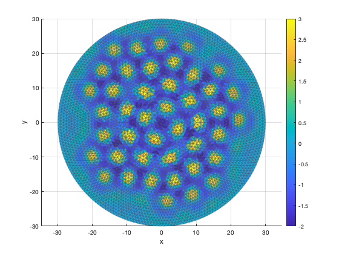

Contents
Cleaning
clear all, close all, clc;
Set path for input data
dataPath = '~/GitHub/utrecht-css-mathneuro-masterclass/Data/Spots-Disk/';
Generate mesh and matrix data, or else load it
generateData = false;
saveAnimation = false;
Geometry and mesh parameters
R = 30; hmax = 0.03;
Model Parameters
p(1) = 5.5;
p(2) = 5.6;
p(3) = 0.4;
Load or generate mesh, synaptic matrix, and FEM matrix
if generateData
mesh = GenerateMesh(R,hmax,dataPath);
b = p(3); wFun = @(r) exp(-b*r) .* (b*sin(r) + cos(r));
W = GenerateSynapticMatrix(mesh.nodes,wFun,1e-3,dataPath);
M = GenerateFEMMatrix(mesh,W,dataPath);
else
fileName = fullfile(dataPath,'mesh.mat');
mesh = load(fileName);
fileName = fullfile(dataPath,'synaptic-matrix.mat');
data = load(fileName); W = data.W;
fileName = fullfile(dataPath,'fem-matrix.mat');
data = load(fileName); M = data.M;
end
Initial condition
x = mesh.nodes(:,1); y = mesh.nodes(:,2); n = length(x);
u0 = 20./cosh(1/20*sqrt(x.^2 + y.^2)).^2;
Time step
rhs = @(t,u) NeuralField(t,u,p,M);
tspan = [0 50];
[t,uHist] = ode45(rhs,tspan,u0);
Animation
plotOpts.clim = [-2 3];
plotOpts.view = [0 90];
PlotHistory(t,uHist,mesh.nodes,mesh.elements,plotOpts);

Save animation to file
if saveAnimation
figure; SaveAnimation(t,uHist,mesh.nodes,mesh.elements,plotOpts,'./');
end